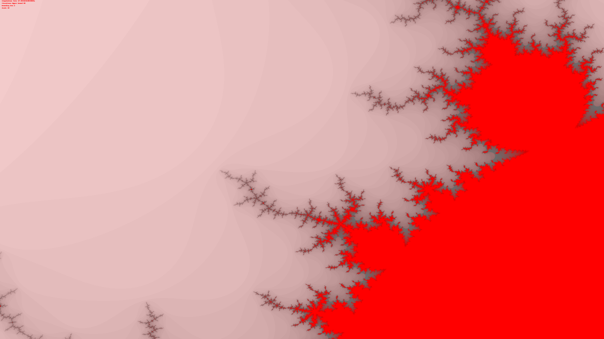
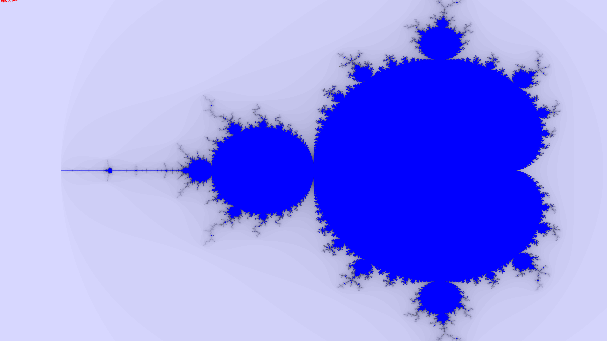
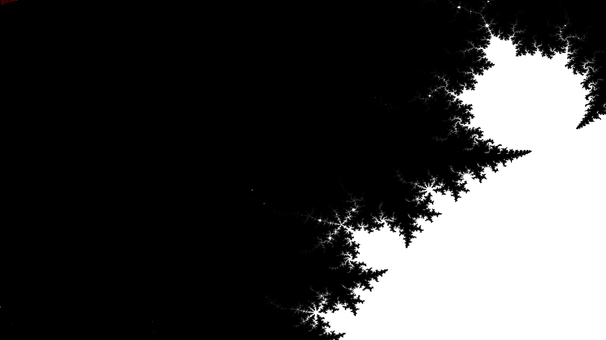

<!DOCTYPE html>
<html>
    <head>
        <title>Generating a Mandelbrot Set in Python</title>
        <meta type="description" content="Generating a Mandelbrot Set in Python"/>
    </head>
    <body>
        <h1>Generating a Mandelbrot Set in Python</h1>
        <hr/>
        <h2>Contents</h2>
        <ol style="padding: 0;">
            <li>
                <a href="#intro">Introduction</a>
            </li>
            <li>
                <a href="#further-reading">Further Reading</a>
            </li>
            <li>
                <a href="#the-code">The Code</a>
            </li>
            <li>
                <a href="#the-code-java">A Concurrent Approach using Java</a>
            </li>
        </ol>
        <hr/>

        <!-- Introduction -->
        <h2 id="intro">Introduction</h2>
        The Mandelbrot Set describes the set of all complex numbers which are bounded (usually within a range of 2) when recursively iterated over with the function <span style="font-family: monospace">z=z<sup>2</sup> + c</span>.
        The set was devised by Benoit Mandelbrot (1924 - 2010) in 1980 and went on to become the most recognizible member of the class of shapes Mandelbrot described as "Fractals".
        <br/>
        
        
        

        <!-- Further Reading -->
        <h2 id="further-reading">Further Reading</h2>
        <ol style="padding: 0;">
            <li>
                <a href="https://www.amazon.com/Fractal-Geometry-Nature-Benoit-Mandelbrot/dp/0716711869/ref=sr_1_1?crid=2E3K23CZ6GW47&dchild=1&keywords=the+fractal+geometry+of+nature&qid=1614376193&sprefix=the+fractal+%2Caps%2C219&sr=8-1">The Fractal Geometry of Nature, Benoit Mandelbrot</a>
            </li>
            <li>
                <a href="https://www.amazon.com/Emperors-New-Mind-Concerning-Computers/dp/0192861980/ref=sr_1_2?dchild=1&keywords=the+emperor%27s+new+mind&qid=1614376177&sr=8-2">The Emperor's New Mind, Roger Penrose</a>
            </li>
            <li>
                <a href="https://en.wikipedia.org/wiki/Benoit_Mandelbrot">Benoit Mandelbrot - Wikipedia</a>
            </li>
        </ol>

        <!-- The Code -->
        <h2 id="the-code">The Code</h2>
        <h3>See the repo at <a href="https://github.com/mgsium/mandelbrot-vis">https://github.com/mgsium/mandelbrot-vis</a></h3>
        <pre>
import cmath
from math import sqrt
from numba import jit
import numpy as np
import os
from PIL import Image, ImageFont, ImageDraw
import time

@jit(nopython=True)
def findIterations(c, max_iter, bounding_box):
    n = 0
    isBounded = True
    z = complex(0, 0)

    while n < max_iter:
        z = z**2 + c
        if bounding_box < abs(z) : break
        n += 1

    return n

if __name__ == "__main__":
    starttime = time.time()
    
    # Resolution
    x = 7680
    y = 4320

    # Number of Maximum Bounding box iterations
    # More iterations -> more accurate but slower & diminishing returns
    max_iter = 80

    # Zoom
    zoom = 1

    # Maximum bounding box
    bounding_box = 2

    # Poisitoning
    x_offset = -2.3
    y_offset = -1

    # Initializing the image
    image = Image.new(mode = "RGB", size = (x, y))
    pixels = image.load()

    for i in range(x):
        for j in range(y):
            # -2.3, -1
            # c = complex( -14 + (i/x) * 3, -3 + (j/y) * 2)
            c = complex( x_offset + (i/x) * 3, y_offset + (j/y) * 2)
            c = c/zoom
            colour = (255 - (findIterations(c, max_iter, bounding_box) * 255//max_iter))
            pixels[i, j] = (colour-40, colour - 40, (255 - colour if colour < 150 else colour))

    draw = ImageDraw.Draw(image)
    draw.text((0, 0), f"  Computation time {time.time() - starttime}s\n  Iterations Upper Bound {max_iter}\n  Bounding Box {bounding_box}\n  Scale {zoom}", fill="red")

    print("Done")

    image.show()
    image.save(os.path.join(os.path.join(os.pardir, "mandelbrot"), input("Filename: ")), "PNG", optimize=True)
        </pre>

        <h2 id="the-code-java">A Concurrent Approach using Java</h2>
        <h4>Complex.java</h4>
        <pre>
public class Complex
{
	double real;
	double img;

	public Complex(double real, double img)
	{
		this.real = real;
		this.img = img;
	}

	public Complex multi(Complex b)
	{
		double r = (this.real * b.real) - (this.img * b.img);
		double i = (this.real * b.img) + (this.img * b.real);
		return new Complex(r, i);
	}

	public double abs()
	{
		return Math.sqrt(Math.pow(this.real, 2) + Math.pow(this.img, 2));
	}

	public double getReal () { return this.real; }

	public void setReal (double real) { this.real = real; }

	public double getImg () { return this.img; }

	public void setImg (double img) { this.img = img; }
}
        </pre>
        <h4>Mandelbrot.java</h4>
        <pre>

import java.util.concurrent.RecursiveTask; 

public class Mandelbrot extends RecursiveTask<boolean[]>
{
	final int seqThreshold = 500;
	boolean pixels[];
	int xL, xH;
	int yL, yH;
	int x, y;

	public Mandelbrot(int xL, int xH, int yL, int yH, int x, int y)
	{
		this.xL = xL;
		this.xH = xH;
		this.yL = yL;
		this.yH = yH;
		this.x = x;
		this.y = y;
		this.pixels = new boolean[(yH - yL) * (xH - xL)];
	}

	protected boolean[] compute()
	{
		if ((this.yH - this.yL) < this.seqThreshold) {
			if ((this.xH - this.xL) < this.seqThreshold){
				boolean[] pixels = new boolean[(this.yH - this.yL) * (this.xH - this.xL)];

				for(int i = this.xL; i < this.xH; i++) {
					for(int j = this.yL; j < this.yH; j++) {
						Complex c = new Complex(-2 + ((double) i/ (double) this.x) * 3, -1 + ((double) j/ (double) this.y) * 2);
						pixels[i + j] = (mandelbrot(c, Math.sqrt(2)) < 80 ? true : false);
					}
				}
			} else {
				int xMid = (this.xL + this.xH) / 2;

				Mandelbrot mA = new Mandelbrot(this.xL, xMid, this.yL, this.yH, this.x, this.y);
				Mandelbrot mB = new Mandelbrot(xMid, this.xH, this.yL, this.yH, this.x, this.y);

				mA.fork();
				mB.fork();

				boolean[] mApixels = mA.join();
                		boolean[] mBpixels = mB.join();
                		System.arraycopy(this.pixels, 0, mApixels, 0, mApixels.length);
                		System.arraycopy(this.pixels, mApixels.length, mBpixels, 0, mBpixels.length);
			}
		} else {
			int yMid = (this.yL + this.yH) / 2;

			Mandelbrot mA = new Mandelbrot(this.xL, this.xH, this.yL, yMid, this.x, this.y);
			Mandelbrot mB = new Mandelbrot(this.xL, this.xH, yMid, this.yH, this.x, this.y);

			mA.fork();
			mB.fork();

            		boolean[] mApixels = mA.join();
            		boolean[] mBpixels = mB.join();
			System.arraycopy(this.pixels, 0, mApixels, 0, mApixels.length);
			System.arraycopy(this.pixels, mApixels.length, mBpixels, 0, mBpixels.length);
		}

		return pixels;
	}

	private static int mandelbrot(Complex c, double bound)
	{
		int n = 0;
		boolean isBounded = true;
		Complex z = new Complex(0, 0);

		while (isBounded && (n < 80))
		{
			z = z.multi(z);
			z.setReal(z.getReal() + c.getReal());
			z.setImg(z.getImg() + c.getImg());
			if (z.abs() > bound) { isBounded = false; }
			n++;
		}

		return n;
	}
}

        </pre>
        <h4>Mnd.java</h4>
        <pre>
import java.io.DataOutputStream;
import java.io.FileOutputStream;
import java.io.IOException;
import java.util.concurrent.ForkJoinPool;
import java.util.Scanner;

class Mnd
{
    public static void main(String[] args)
    {
		ForkJoinPool fjp = new ForkJoinPool();

        // Resolution
		int x = 30720;
		int y = 17280;

		long sTime = System.nanoTime();

		Mandelbrot m = new Mandelbrot(0, x, 0, y, x, y);
		/*
		try { 
			FileOutputStream f = new FileOutputStream(".\\mnd.txt");
			DataOutputStream ds = new DataOutputStream(f);
			for (boolean val : m.invoke()) ds.writeBoolean(val); 
		}
		catch (IOException e) {}
		// m.invoke();
		*/
		System.out.println(String.format("Execution Time : %fs", ((double) (System.nanoTime() - sTime))/1000000000));
    }

	private static int mandelbrot(Complex c, double bound)
	{
		int n = 0;
		boolean isBounded = true;
		Complex z = new Complex(0, 0);

		while (isBounded && (n < 80))
		{
			z = z.multi(z);
			z.setReal(z.getReal() + c.getReal());
			z.setImg(z.getImg() + c.getImg());
			if (z.abs() > bound) { isBounded = false; }
			n++;
		}

		return n;
	}
}
    </body>
</html>